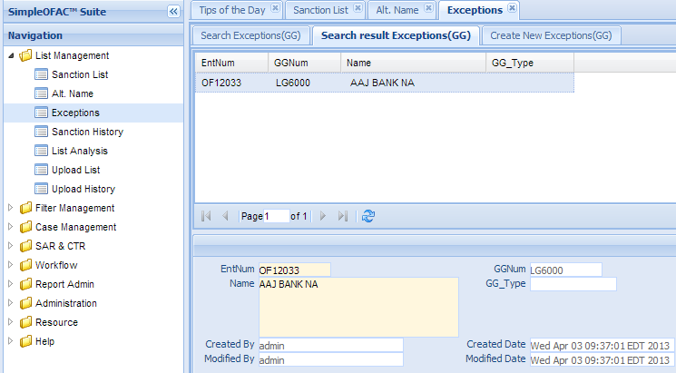
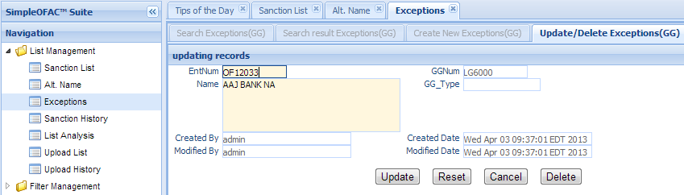
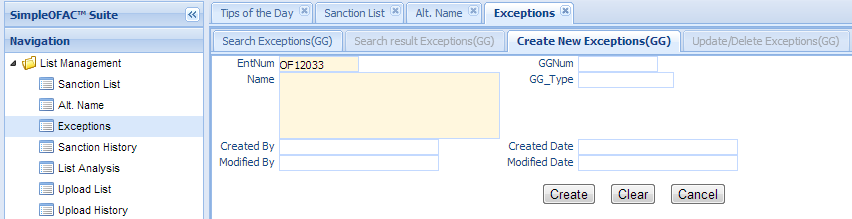

Exception(Good Guy)¶
Filter engine scans the customer data or payment transaction against the sanction list, produces alert or no alert results. Some alerts are true alerts, while others are false alerts.
There are some entries in the sanction list, produces large volume of false alerts. Exceptions, also called Good Guys are used to eliminate those false alerts.
Each Sanction List entry can have 0 to many Exceptions. If the customer name match the sanction list name, at the same time, the customer name also 100% match the exception name, the filter engine will ignore the alert and produce no alert result.
For example, “John” is the name of a sanction list entry. So “John smith”, “ED John” will get alerts on this entry. If we add “John smith”, “Ed John” as exceptions to this list, the filter will ignore the alerts on John and produce no alert result. Please note that customer name must be 100% match the exception name, in order to ignore the alert on this entry.
Like Alt. Name, Exceptions must link to a sanction list entry.This function is used to manage those Exceptions, or Good Guys. Click the Exception in the left navigation menu under List management, a new Exception Tab folder will be created in the right panel.
There are 3 sub-Tab folders, Search Exception(Good Guy), Search Result Exception(Good Guy) and Create New Exception(Good Guy).
Note
Exception must link to a Sanction List list entry.
Search Exception(Good Guy)¶
Search Criteria
| Field Name | Description |
|---|---|
| entNum | Link to sanction list entry unique record identifier. |
| GGNum | Exception unique record identifier. |
| Name | Name of Exceptions. |
| GG Type | Type of Exceptions. |
| CreatedByDate | Date and Time when this entry is created |
| CreatedByUser | User who create this entry. |
| ModifiedByDate | Last modified date and time. |
| ModifiedByUser | Last modified user. |
| AND | Select AND radio box if you want those criteria add together. |
| OR | Select OR radio box if you want to get the result if either criteria meet |
Functional buttons¶
- Find: – click Find button to search.
- Clear:– click Clear button to clear all the criteria.
Search Result Exception(Good Guy)¶
The top part is the table, shows the list of the Exception(Good Guy) that meet the search criteria. The bottom part is the details of the selected entry
Update/Delete Exception(Good Guy)¶
Double Click the selected record in the table to modify this entry. A new Tab folder Update/Delete Alt. Name will be added, as show below.
Functional buttons¶
- Update: – make changes on the Exception(Good Guy), then save and switch back to “Search result Exception(GG)” Tab. Some of the fields in this form are read only, like GGnum, created/modified user and date.
- Reset:– reset the data to its initial value, discard all the changes.
- Cancel:– Cancel this change and switch back to “Search result Exception(GG)” Tab.
- Delete:– Delete this entry, then switch back to “Search result Exception(GG)” Tab.
Create New Exception(Good Guy)¶
Select the “Create New Exception(GG)” Tab to create a new entry.
| Field Name | Description |
|---|---|
| entNum | Link to sanction list entry unique record identifier. |
| GGNum | Exception unique record identifier; This is a read only field. |
| Name | Name of Exceptions; This is a mandatory field. |
| GG Type | Type of Exceptions. |
| CreatedByDate | Date and Time when the entry is created. It is a read only field. |
| CreatedByUser | User who create this entry. It is a read only field. |
| ModifiedByDate | Last modified date and time; It is a read only field. |
| ModifiedByUser | Last modified user; It is a read only field. |
Functional buttons¶
- Create: – Click the Create button to create a new Exception. Name entry and switch to “Search result Exception(GG)” Tab. Name is a mandatory field, if it is empty, an error will show
- Clear:– Click the Clear button to clear all the fields
- Cancel:– Click the Cancel button to cancel operation and switch back to “Search result Exception(GG)” Tab.